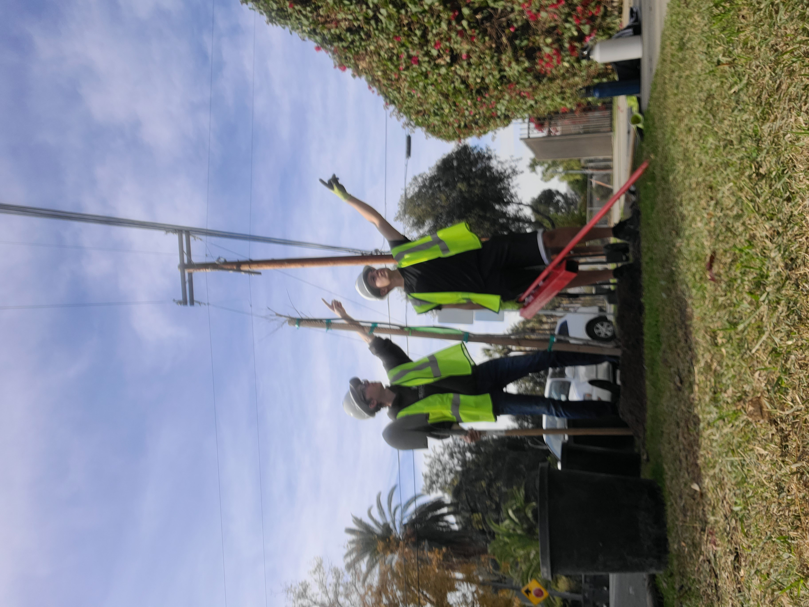
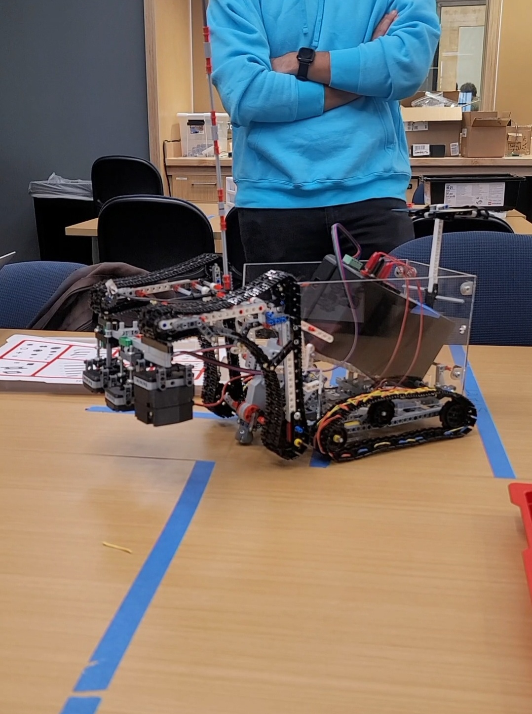
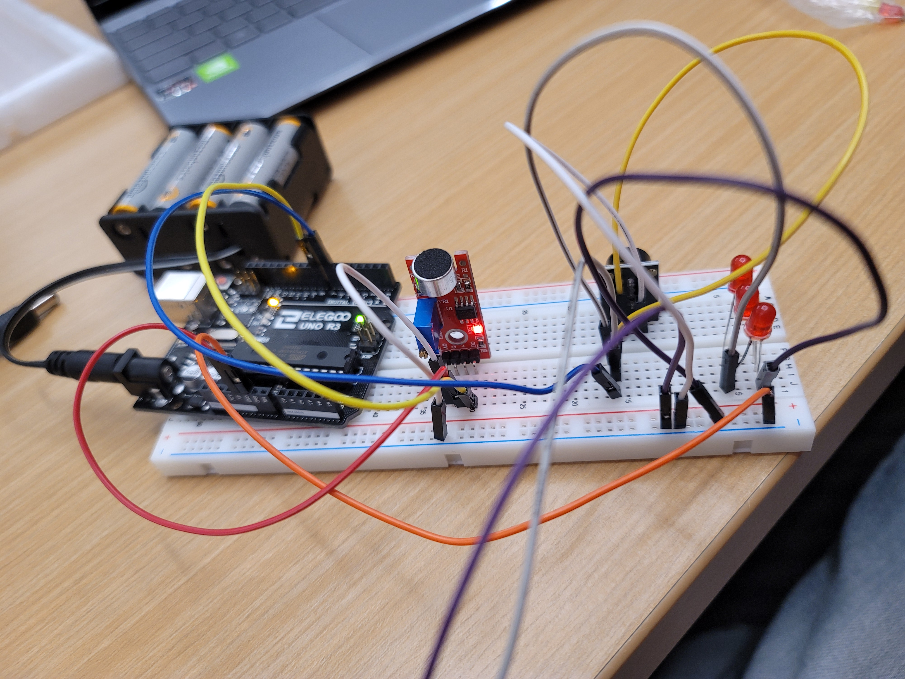
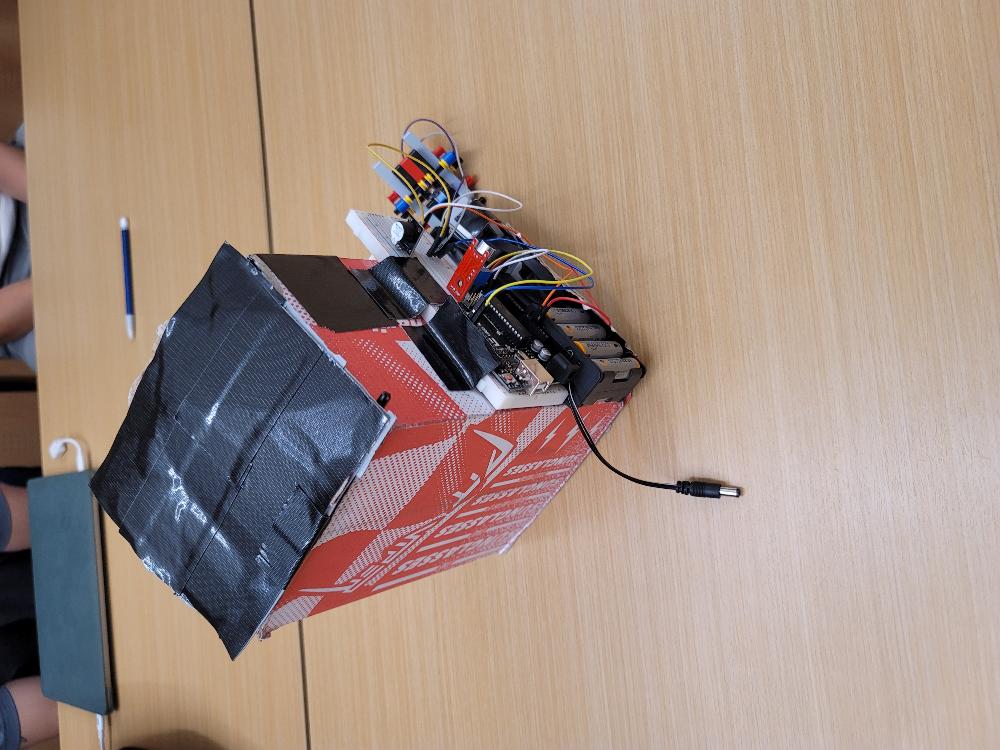
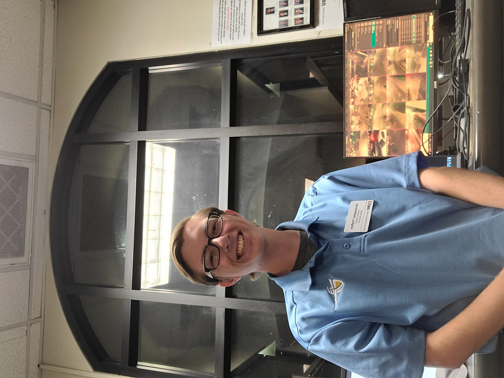
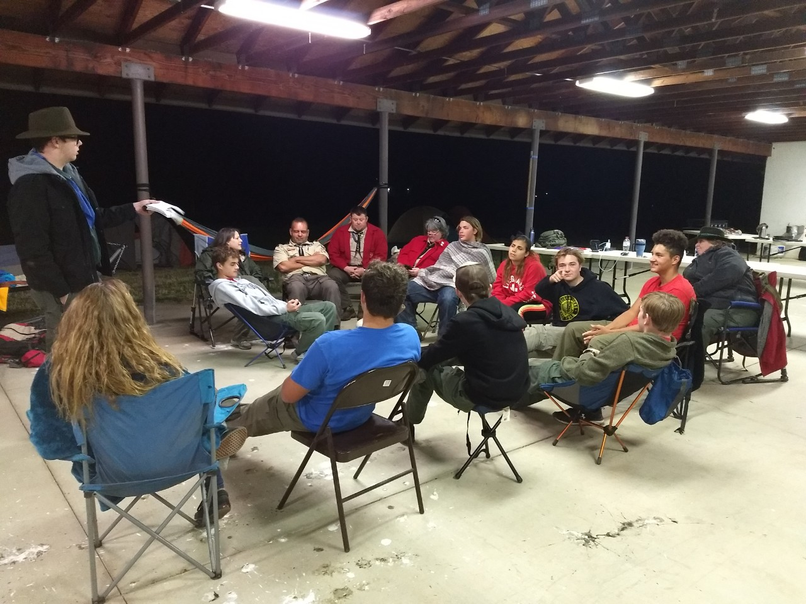
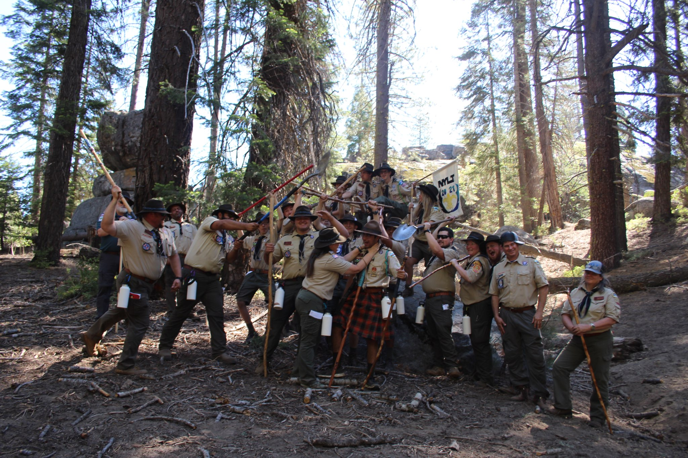
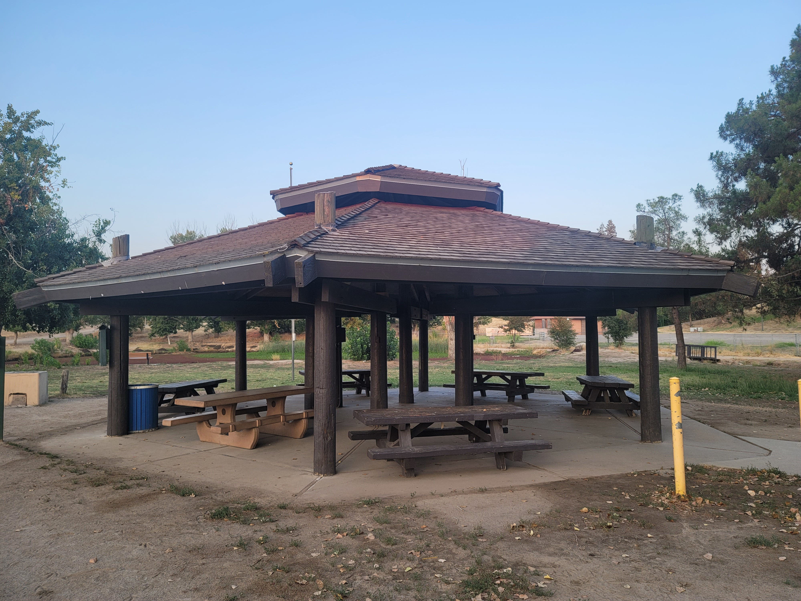

HOME EDUCATION EXPERIENCE CONTACT ME

I have done many projects in my time in highschool and college. In regards to community service I have done countless hours giving maintenance and clean up for parks and forests. But in the past year I have worked with a local organization that plants trees around the streets of riverside. As for my technical projects, most of them I did in college. In the picture on the left I worked with a team to design a robot that uses a lego mindstorm and gearbox motor/controller. We designed and iterated the robot through multiple prototypes. We 3D printed multiple little pieces, acrylic printed the clear walls, built the gearbox motor, and made the lego frame and tread system. The purpose of the robot was to scan three different sensors: light, distance and charge. The other project in the middle photo is an arduino and breadboard I used to make a sound sensor. When a loud enough sound occurs, the breadboard will activate a buzzer sound and light up a little bulb. This was ultimately incorporated into the project on the right photo. This was an automated trash can that I built with a team. We made a box with the arduino on the side, then used a lego mindstorm to open the lid of the trash can. Basically when someone makes a sound like clapping, the arduino will activate the light bulb, then a sensor on the mindstorm will read the light value and activate a motor arm that opens the lid. The outcome is a trash can that you can clap, and it will automatically open.



My first and current job is as a student worker for Safety Services, an office at California Baptist University. The purpose of our office is to provide security for the school and students. What this means for me is that I do a variety of different tasks. I work the crosswalk to make sure traffic does not get backed up and no pedestrians get hit by cars running across the road. I also watch the cameras around campus and call in different security threats or suspicious persons. But the main job I do most often is working the Welcome Pavillions at the two entrance gates to the school. For the gates I have to look at cameras, make sure no non-affiliated people walk or drive onto campus, along with answering questions and giving directions to people. The job is normally not stressful, but that is only as long as nothing goes wrong. I like the job because it enables me to interact with other students and staff when greeting them at the gate.


I was also active in a Boy Scout Troop from 6th grade to senior year of high school. My years through that taught me many valuable life lessons and how leadership and organization should work. In my time there I was able to achieve the rank of Eagle Scout, the highest rank someone can achieve. It is a rank that only six percent of people who have ever been in Boy Scouts have achieved. One of the requirements I had to do was plan, organize and fund a community service project. For me I had to contact the Parks and Recreation department of Fresno and coordinate with them along with my troop to remodel a gazebo in our local park. I had to find workers, accumulate funds, write out an action plan, then enact it all. It was a hard thing to do, especially for a seventeen year old in high school. But I was able to organize and lead a group in doing a project that I had coordinated and planned out. It was during that time that I was also a staff member of the National Youth Leadership Training. It is a program in scouting where new leaders from each troop are sent to a camp for the week to learn leadership, speaking and presentation skills. I had not only gone through the course myself, but had staffed it for two years. Meaning that I had to learn all of the course content to be able to present it and teach it to sixty scouts at camp. My main position during that time was Assistant Senior Patrol Leader of Program. This is basically the second in command of the camp, and is the person in charge of following the program and schedule, making sure that every activity has the required resources, workers and time. It was a stressful job, but it did teach me many scheduling, managing and presentation skills.


